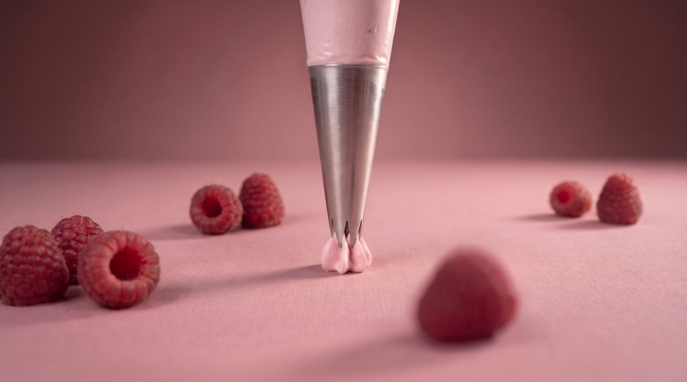
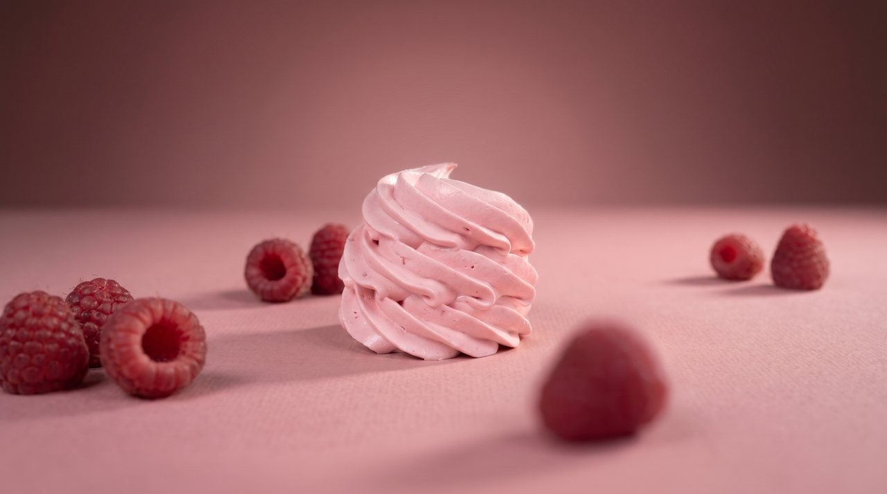

Scene 1 · the real thing
Your thumb pipes it
Scroll back up, slowly, then fast, then backwards. The film follows your thumb, the way your reference sites work. One screen and a quarter of scroll, start to finish.
- The zefir is yours. The finished piece is the real one from your take 76867: same ridges, same berry specks. Only the set around it was rebuilt: rose paper like the box, studio light, fresh raspberries.
- Made the way your references are made: a clean first frame, a clean last frame, a generated clip between them, cut into frames.
- The real technique. The nozzle travels in circles, laying ring on ring, as your chef does in the original take. Both films were remade for this.
- Both screens. Laptops get a wide film with raspberries on both sides; phones get a tall film. It is the same scene, made twice, so nothing is cropped or destroyed.


Fonts
Three pairs to choose from
You were right about the fonts. Use the A · B · C switch at the top of the scene and watch the big words change.
- A: a light, tall serif with a soft italic, and a clean geometric sans for the small capitals. Quiet and expensive. My pick.
- B: a strong contrast serif, closer to the letters on the box, with a modern sans.
- C: classic Roman capitals, like an engraved programme, with a humanist sans.
The name on the box stays as your artwork. The Russian lines are drafts.
Two answers
What I need from you
The scene"yes" to continue with scene 2 the same way, or tell me what is wrong with this one.
The font"A", "B" or "C".
Nothing is live until you say yes.